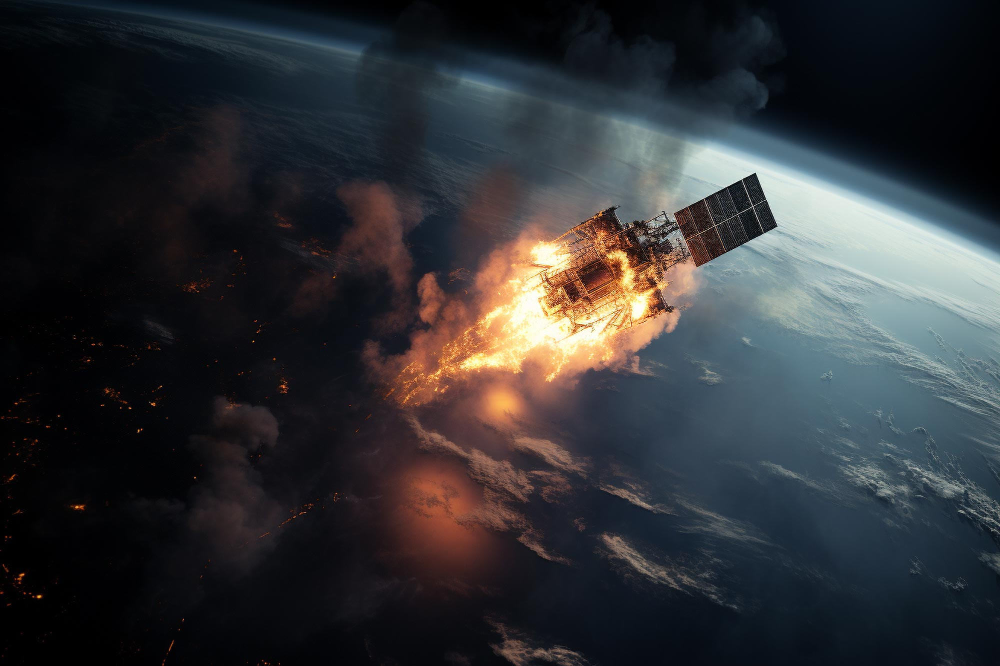
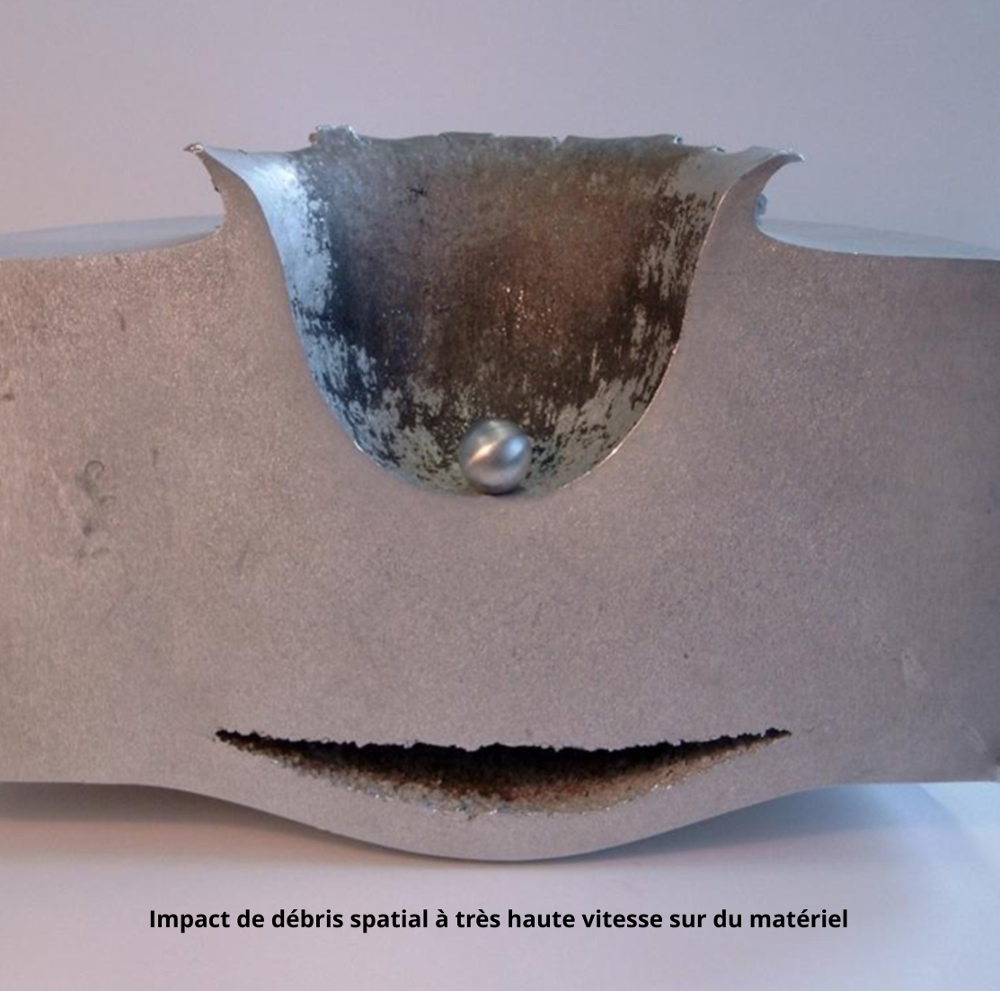
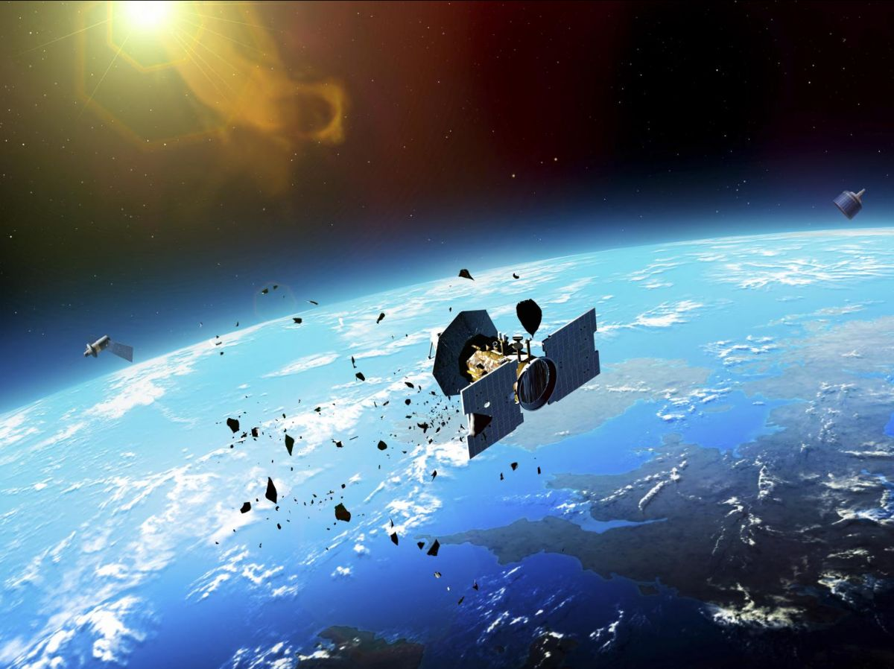

LES CONSÉQUENCES
Au-dessus de nos têtes, une pollution invisible menace directement nos satellites, notre économie mondiale et nos infrastructures

Au-dessus de nos têtes, une pollution invisible menace directement nos satellites, notre économie mondiale et nos infrastructures
Les collisions entre débris et satellites actifs représentent aujourd’hui un danger majeur pour les activités
spatiales.
En 2021, après la destruction du satellite russe Cosmos-1408, un nuage de fragments a directement menacé l'ISS
(Station spatiale internationale),
obligeant l’équipage à se réfugier dans les capsules de secours. Cet épisode montre que les débris ne menacent
pas seulement des machines,
mais aussi des vies humaines.
Selon la NASA, la probabilité annuelle de collision avec un objet de plus d’un centimètre atteint
environ 0,3 %, un chiffre assez significatif pour imposer des
manœuvres d’évitement régulières. Entre 1999 et 2022, plus de 30 ont été réalisées pour protéger l’ISS, un
chiffre en hausse avec la multiplication
des constellations privées comme Starlink et Project Kuiper.
Même un fragment d’1 cm, lancé à près de 10 km/s, peut libérer une énergie comparable à celle d’une
balle de fusil.
Ces impacts fragilisent les structures, endommagent les capteurs et perturbent les communications, mettant
progressivement hors service satellites et
stations.

Chaque collision entraîne aussi des conséquences économiques lourdes. La perte d’un satellite signifie l’arrêt
immédiat
de services essentiels comme le GPS, les télécommunications, la météo, etc. En 2021,
l’ESA (Agence spatiale européenne) a dû repousser le lancement du James Webb Space Telescope à cause d’un
risque de débris, générant
déjà plusieurs
millions de dollars de coûts supplémentaires.
Les assureurs évaluent aujourd’hui ces risques à des milliards, avec une hausse progressive des primes
et des exigences
techniques. Plus le trafic spatial augmente, plus le danger devient collectif : chaque nouveau lancement
accroît le risque global
de collision pour tous.
À long terme, l’impact
dépasserait largement le domaine spatial. Notre société devient de plus en plus dépendante de l'espace. On
comprend donc qu'une dégradation
massive de l’orbite basse pourrait complètement nous perturber.

Le syndrome de Kessler représente l’une des pires conséquences possibles de l’accumulation des débris
spatiaux. Il décrit un scénario où l’orbite terrestre devient tellement encombrée qu'une seule
collision peut déclencher une réaction en chaîne. Un
satellite se brise, crée des centaines de fragments, ces fragments frappent d’autres satellites, qui explosent
à leur tour. Peu à peu, certaines orbites deviennent
de véritables champs de débris, impossibles à utiliser.
Ce concept a été formulé en 1978 par Donald Kessler. Plus on met d’objets en orbite, plus le risque de
collision augmente. À partir d’un certain seuil, le processus devient autogénératif : même si on arrêtait tous
les lancements, les impacts continueraient d’eux-mêmes pendant des décennies.
Selon plusieurs modèles, ce point critique pourrait être atteint entre 2040 et la fin du siècle. Plus
les collisions produisent de fragments,
plus ce seuil arrive tôt, ce qui correspond aux observations de l’ESA.
En résumé, si rien ne change, nos orbites pourraient devenir complètement bouchées et inutilisables.